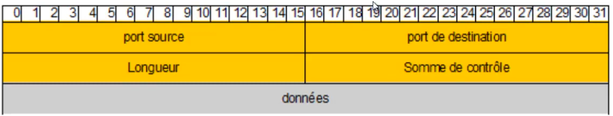

UDP
Plan• Présentation
• Segement UDO
• Annex : nommage des PDU
Présentation• Protocole de transport
◇ permet de répondre à certaines problématiques non couvertes par le TCP
◇ services ne nécissitant pas de contrôle de la fiabilité des données
▪ permet un meilleur débit (transport immédiat des informations)
▪ streaming, VOIP, etc ...
- un paquet peut être perdu
- mais l'essentiel est d'envoyer les informations en temps réel, le plus rapidement possible
• Bien plus simple que le TCP
◇ aucune procédire de contrôle et donc de mode connecté
• Les services pourront utiliser TCP ou UDP ou les deux
◇ TCP uniquement : HTTP (port 80)
◇ UDP uniquement (rare) : NTP (port 123), NFD (port 973)
◇ les (grande majorité des services) : SSH (port 22), IMAPv3 (port 220)
Segment UDP
• Le plus simple possible
◇ aucun mécanisme complexe
◇ ports (source + destination)
▪ idem que pour TCP
▪ cf
https://fr.wikipedia.org/wiki/Liste_des_ports ◇ longueur du segment
◇ somme de contôle (pour l'intégité)
Annex : nommage des PDU• Nombreux termes -> nombreuses confusions
◇ paquet, segment, datagramme, trame
• Datagramme
◇ pour les éléments envoyés sans contrôle de réception
◇ IP mais aussi UDP
• Segment
◇ division d'un message en plusieurs éléments de taille variable
◇ pour optimiser le transfert
◇ couche Transport : TCP/UDP
• Paquet
◇ couche réseau uniquement ! (IP, ICMP)
◇ souvent mal utilisé
▪ ne s'applique pas aux couche supérieures (TCP/UDP) ni inférieurs (Ethernet)
• Trame
◇ dernière encapsulation avant transport sur le réseau
▪ header + données + traiter
◇ couche liaison uniquement ! (Ethernet, WiFi, PPP)
Ce qu'on a couvert• Présentation du protocole UDP
◇ segment
◇ principes
◇ avantages et inconvénients